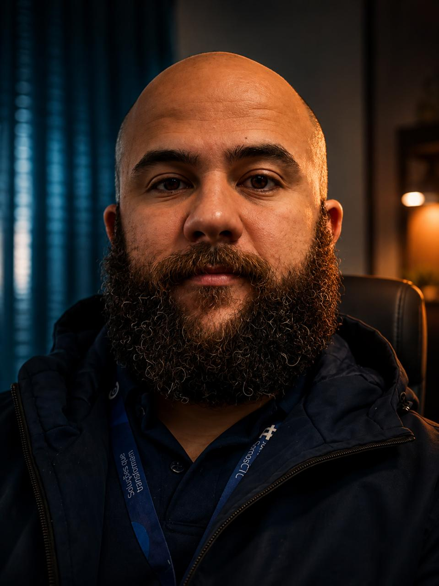
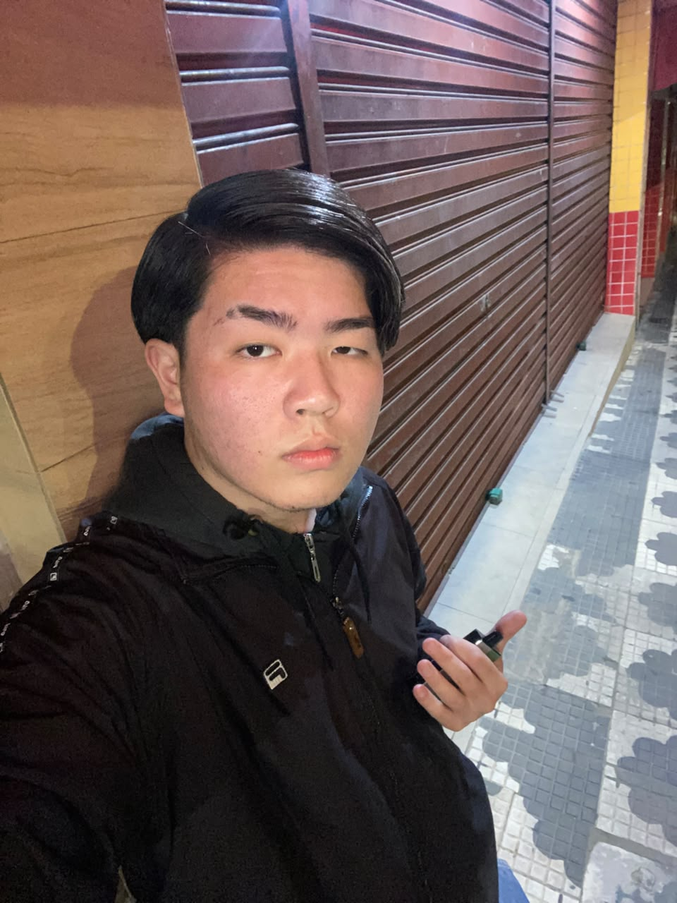

Primeiros Passos no Vale Rota
Conheça a proposta do projeto e como o mapeamento de trajetos pode ajudar a tornar os deslocamentos mais organizados e eficientes.
Uma solução desenvolvida pela equipe MoveTech para conectar pessoas, organizar trajetos e tornar a mobilidade mais inteligente.
Conheça o projetoTecnologia aplicada para melhorar a forma como as pessoas encontram e utilizam seus trajetos.
O MoveTech busca desenvolver soluções inteligentes para o cotidiano. Seu principal projeto, o Vale Rota, surgiu da necessidade de mapear, otimizar e conectar trajetos com mais eficiência, aproximando comunidades e contribuindo para uma mobilidade mais acessível e organizada.
As pessoas por trás do desenvolvimento do Vale Rota.
Desenvolvedor / Tecnologia

Líder de Projeto

UI/UX Designer

Especialista de Sistemas
Acompanhe as novidades, ideias e etapas de desenvolvimento do Vale Rota.
Conheça a proposta do projeto e como o mapeamento de trajetos pode ajudar a tornar os deslocamentos mais organizados e eficientes.
Veja como a interface está sendo planejada para oferecer uma navegação simples, clara e acessível para diferentes perfis de usuários.
Conheça os próximos passos da infraestrutura e as melhorias planejadas para a evolução da plataforma Vale Rota.